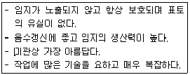
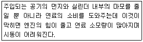
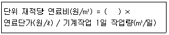

산림기능사 (2013-04-14 기출문제)
1과목: 조림 및 육림기술
1. 조림목의 식재열을 따라 약 90~100㎝ 폭으로 잡초목을 제거하는 풀베기 작업은?
- 모두베기
- 줄베기
- 둘레베기
- 잡초베기
(정답률: 87%)

2. 데라사끼 간벌형식 중 상층수관을 강하게 벌채하고 3급목을 남겨서 수간과 임상이 직사광선을 받지 않도록 하는 것은?
- A종
- C종
- D종
- E종
(정답률: 67%)
3. 파종상에서 1년간 키운 다음 이식하여 1년을 키운 후 다시 이식해서 1년을 더 키운 3년생 실생묘의 연령 표기는?
- 1 - 2묘
- 1 - 1 - 1묘
- 1/2묘
- 1 - 2 - 1묘
(정답률: 93%)
4. 발아기간을 단축하기 위하여 씨를 뿌리기 전에 발아 촉진을 시키는 방법으로 틀린 것은?
- X선 분석법
- 종피 파상법
- 침수 처리법
- 노천 매장법
(정답률: 88%)
5. 임지와 임목의 건전한 생산성을 위한 생물적 임지 보육작업으로 적합한 것은?
- 계단 조림
- 비료목 식재
- 임지경토
- 임지피복
(정답률: 81%)
6. 택벌작업에서 벌채목을 정할 때 생태적 측면에서 가장 중점을 두어야 할 사항은?
- 우량목의 생산
- 간벌과 가지치기
- 대경목을 중심으로 벌채
- 숲의 보호와 무육
(정답률: 73%)
7. 임목종자의 품질검사에 대한 설명으로 틀린 것은?
- 순량률은 순정종자 무게를 전체 시료종자 무게로 나누어 백분율로 표기한다.
- 용적중은 10L 의 종자무게를 kg단위로 표시한다.
- 발아율은 발아된 종자의 수를 전체 시료종자의 수로 나누어 백분율로 표기한다.
- 효율은 실제 득묘할 수 있는 효과를 예측하는데 사용될 수 있는 종자의 사용가치를 말한다.
(정답률: 78%)
8. 다음 중 삽목발근이 어려운 수종은?
- 사철나무
- 아까시나무
- 동백나무
- 주목
(정답률: 52%)
9. 교림작업과 왜림작업을 혼합한 갱신작업으로 동일 임지에서 건축재(일반용재)와 신탄재를 동시에 생산 하는 것을 목적으로 하는 작업종은?
- 산벌작업
- 택벌작업
- 모수작업
- 중림작업
(정답률: 68%)
10. 다음의 특징을 갖는 작업종은?

- 산벌작업
- 택벌작업
- 모수작업
- 중림작업
(정답률: 73%)
11. 씨앗을 건조할 때 음지에 건조해야 하는 종은?
- 소나무
- 밤나무
- 전나무
- 낙엽송
(정답률: 64%)
12. 종자의 품질 검사에서 발아율이 60%이고, 순량율이 80%인 종자의 효율은?
- 13%
- 20%
- 48%
- 75%
(정답률: 84%)
13. B종 간벌에 대한 설명으로 가장 옳은 것은?
- 4, 5급목을 전부 벌채하고 2급목의 소수를 벌채하는 것
- 최하층의 4, 5급목 전부와 3급목의 일부, 그리고 2급목의 상당수를 벌채하는 것
- 4, 5급목의 전부와 3급목의 대부분을 벌채하고 때에 따라서는 1급목의 일부를 벌채하는 것
- 4, 5급목의 전부와 특히 1급목의 일부도 벌채하는 것
(정답률: 59%)
14. 꽃의 구조 중 암꽃과 수꽃이 한 나무에 달리는 자웅동주에 해당하는 수종이 아닌 것은?
- 자작나무
- 밤나무
- 버드나무
- 호두나무
(정답률: 52%)
15. 종자의 성숙시기가 5월인 수종은?
- 피나무
- 소나무
- 가래나무
- 버드나무
(정답률: 62%)
16. 도태간벌의 특성에 대한 설명으로 맞는 것은?
- 간벌양식으로 볼 때 하층간벌에 속한다.
- 간벌재 이용에 유리하다.
- 복층구조 유도가 힘들다.
- 장벌기 고급 대경재 생산에는 부적합하다.
(정답률: 50%)
17. 채종림에 대한 설명으로 틀린 것은?
- 채종림은 전국 산림 중 우량 임분을 골라 법적인 절차를 거쳐 지정한다.
- 지금 당장 필요한 우량종자를 확보하고자 잠정적으로 이용하는 임분이다.
- 사유림에서는 채종림으로 지정받을 수 없다.
- 채종림으로 지정되면 우량한 형질을 지닌 개체목을 잔존시키고 불량목을 제거한다.
(정답률: 75%)
18. 산림용 고형복합비료의 함량비율(질소:인산:칼리) 로 가장 적합한 것은?
- 1:3:4
- 3:4:1
- 2:2:2
- 3:1:4
(정답률: 69%)
19. 산림묘표 적지 선정에 대한 설명으로 틀린 것은?
- 토심이 깊고 부식질 함량이 많으면 좋다.
- 묘포 토양의 적정 산도는 pH 5.5 ~ 6.5 가 적당한다.
- 평탄지보다 5도 이하의 경사가 있으면 관수와 배수에 좋다
- 북반구에서는 조림할 장소보다 남쪽에 있는 것이 유리하다.
(정답률: 61%)
20. 가식에 관한 설명으로 맞는 것은?
- 가을철 가식 때에는 묘목의 끝이 남쪽으로 향하도록 한다.
- 단기간 가식할 때에는 다발을 풀어 가식한다.
- 한풍해가 우려될 때에는 묘목 끝이 바람과 같은 방향으로 누인다.
- 가식하는 장소는 햇빛이 많이 들어야 한다.
(정답률: 72%)
21. 조림을 위한 우량묘목의 구비조건이 아닌 것은?
- 발육이 완전하고 조직이 충실한 것
- 가지가 사방으로 고루 뻗어 발달한 것
- 묘목이 약간 웃자란 것
- 측근과 세근의 발달향이 많을 것
(정답률: 81%)
22. 연료림이나 작은 나무의 생산에 적당한 작업종은?
- 교림작업
- 왜림작업
- 중림작업
- 모수작업
(정답률: 81%)
23. 완만재를 생산할 수 있을 뿐만 아니라 수간의 직경 생장을 증대시키기 위한 육림작업은?
- 풀베기
- 어린나무 가꾸기
- 덩굴제거
- 가지치기
(정답률: 67%)
24. 내음력이 뛰어난 음수끼리만 짝지어진 것은?
- 주목, 회양목
- 회양목, 낙엽송
- 소나무, 잣나무
- 주목, 소나무
(정답률: 76%)
25. 모수작업에 관한 설명으로 맞는 것은?
- 종자 비산력이 작은 수종은 불가하다.
- 음수의 갱신에 적합하다.
- 군상으로 남기는 것은 불가하다.
- 모수로 남겨야 할 임목은 전 임목에 대하여 본수로는 2~3% 이다.
(정답률: 62%)
2과목: 산림보호
26. 최근에 산불이 발행하면 임내에 가연물이 많아 대형화 되는 경우가 많다. 최근까지 조사된 산불원인 중 산불발생 빈도가 가장 높은 것은?
- 어린이 불장난
- 성묘객의 실화
- 입산자의 실화
- 논, 밭두렁 소각
(정답률: 79%)
27. 화학적 방제법 중 독성분이 해충의 입을 통하여 소화관내에 들어가 중독작용을 일으켜 사망시키는 약제는?
- 접촉살충제
- 훈연제
- 소화중독제
- 침투성살충제
(정답률: 76%)
28. 주풍에 의한 피해로서 가장 거리가 먼 것은?
- 임목의 생장량이 감소된다.
- 수형을 불량하게 한다.
- 침엽수는 상방편심 생장을 하게 된다.
- 기공이 폐쇄되어 광합성 능력이 저하된다.
(정답률: 81%)
29. 수목의 종실을 가해하는 해충은?
- 대벌레
- 솔알락명나방
- 솔수염하늘소
- 느티나무벼룩바구미
(정답률: 71%)
30. 아까시나무 모자이크병의 매개충은?
- 복숭아혹진딧물
- 오동나무매미충
- 마름무늬매미충
- 솔잎혹파리
(정답률: 54%)
31. 살충제 중 훈증제로 쓰이는 약제는?
- 메칠브로마이드
- BT제
- 비산연제
- DDVP
(정답률: 56%)
32. 겨울철 저온에 의한 나무의 피해가 가장 큰 상혈 발생 지형은?
- 계곡이 아닌 햇볕이 잘 드는 곳
- 바람이 잘 통하는 평탄한 곳
- 북풍을 막아주는 남향의 지형
- 사면을 따라 오목하게 들어간 곳
(정답률: 79%)
33. 다음 중 잠복기간이 가장 긴 수병은?
- 소나무재선충병
- 잣나무털녹병
- 포플러잎녹병
- 낙엽송잎떨림병
(정답률: 36%)
34. 산불위기 경보구분과 발령기준에 대한 설명으로 틀린 것은?
- 관심 - 산불예방에 대한 관심이 필요한 경우 주의 경보 발령기준에 미달
- 주의 - 산불위험지수 51 이상 지역이 70% 이상
- 경계 - 산불위험지수 61 이상 지역이 80% 이상
- 심각 - 산불위험지수 86 이상 지역이 70% 이상
(정답률: 58%)
35. 농약의 효력을 높이기 위해 사용하는 물질 중 농약에 섞어서 고착성, 확전성, 현수성을 높이는데 사용되는 것은?
- 훈증제
- 불임제
- 유인제
- 전착제
(정답률: 82%)
36. 오리나무잎벌레에 대한 설명으로 틀린 것은?
- 지피물 밑이나 흙속에서 월동한다.
- 성충으로 월동한다.
- 유충은 엽육을 먹으며 성장한다.
- 1년에 2회 이상 발생한다.
(정답률: 59%)
37. 다음 중 담자균류에 의한 수병은?
- 소나무 혹병
- 밤나무 줄기마름병
- 그을음병
- 오동나무 탄저병
(정답률: 51%)
38. 솔잎혹파리의 방제를 위하여 수간주사를 할 때 사용하는 약제는?
- 포스팜
- 스미치온
- 메타시톡스
- 다찌가렌
(정답률: 52%)
39. 살충기작에 의한 살충제의 분류 방법 중 나프탈렌, 크레오소트 등이 속하는 것은?
- 유인제
- 기피제
- 용제
- 증량제
(정답률: 75%)
40. 포플러잎녹병의 중간숙주는?
- 향나무
- 송이풀
- 일본잎갈나무
- 까치밥나무
(정답률: 74%)
3과목: 임업기계일반
41. 내연기관 중 실린더의 압축비를 바르게 나타낸 것은?
- 압축비 = (행정용적＋간극용적) / 간극용적
- 압축비 = (행정용적＋간극용적) / 행정용적
- 압축비 = (행정용적 - 간극용적) / 간극용적
- 압축비 = (행정용적 - 간극용적) / 행정용적
(정답률: 41%)
42. 체인톱의 부품에 해당되지 않는 것은?
- 스프라켓
- 안내판
- 피치
- 스로틀레버 차단판
(정답률: 67%)
43. 다음 중 기계톱에 사용되는 연료에 대한 설명으로 틀린 것은?
- 기계톱은 2행정기관이므로 혼합유를 사용한다.
- 급유할 때에는 연료를 잘 흔들어 섞어준 뒤에 급유해야한다.
- 옥탄가가 높은 휘발유가 시동이 잘 걸리고 출력이 높아 편리하다.
- 불법 제조된 휘발유를 사용하면 오일막 또는 연료 호스가 높고 연료통 내막을 부식시킨다.
(정답률: 82%)
44. 다음은 예불기의 장치 중 어느 것에 대한 설명인가?

- 엑셀레바
- 연료탱크
- 공기필터 덮개
- 공기여과장치
(정답률: 75%)
45. 다음 중 조림용 도구에 대한 설명으로 틀린 것은?
- 각식재용 양날괭이 - 형태에 따라 타원형과 네모형으로 구분되며 한쪽 날은 괭이로서 땅을 벌리는데 사용하고 다른 한쪽 날은 도끼로서 땅을 가르는데 사용된다.
- 사직쟁이 괭이 - 경사지, 평지 등에 사용하고 대묘보다 소묘의 사식에 적합하다.
- 손도끼 - 조림용 묘목의 긴뿌리의 단근작업에 이용되며, 짧은 시간에 많은 뿌리를 자를 수 있다.
- 재래식 괭이 - 규격품으로 오래전부터 사용되어 오던 작업도구로 산림작업에서 풀베기, 단근 등에 이용된다.
(정답률: 73%)
46. 임목집재용 기계 중 활로에 의한 집재 시 활로 구조에 따른 수라의 종류로 틀린 것은?
- 흙수라
- 석수라
- 나무수라
- 플라스틱수라
(정답률: 61%)
47. 엔진에서 피스톤이 상부에 있을 때를 상사점(TDC) 이라 하고, 최하부로 내려갔을 때를 하사점(BDC)라 한다. TDC와 BDC 사이는 무엇이라 하는가?
- 연소실
- 행정
- 실린더
- 피스톤
(정답률: 66%)
48. 예불기 작업 시 작업자의 준수 사항으로 틀린 것은?
- 작업을 침착하게 진행하여야 한다.
- 항상 전진 또는 좌우이동은 천천히 하여야 한다.
- 소경재는 90도 로 절단하여야 한다.
- 톱날은 항상 연마되어 있어야 하며 예비 날을 휴대한다.
(정답률: 85%)
49. 도끼와 자루를 연결하였을 때 그림과 같이 도끼의 일부에 공기가 통과할 수 있는 공간이 있을시 어떤 결과가 나타나는가?(문제 복원 오류로 그림이 없습니다. 정답은 3번 입니다.)
- 자루 빼기가 힘들다.
- 자루의 사용이 효율적이다.
- 자루가 빠질 위험이 높다.
- 특별한 영향이 없다.
(정답률: 84%)
50. 4행정기관에서 1싸이클을 완료하기 위하여 크랭크축은 몇 회전하는가?
- 4
- 3
- 2
- 1
(정답률: 79%)
51. 다음 중 가선집재 작업의 순서로 가장 알맞은 것은?
- 벌목조재 → 가선집재 → 조재 → 집적작업 → 수요처(제재소)
- 가선집재 → 벌목조재 → 조재 → 집적작업 → 수요처(제재소)
- 집적작업 → 조재 → 가선집재 → 벌목조재 → 수요처(제재소)
- 벌목조재 → 가선집재 → 집적작업 → 조재 → 수요처(제재소)
(정답률: 43%)
52. 소경재 임분작업을 하려고 이리톱의 톱날갈기를 할 때 가장 적당한 가슴각은 얼마인가?
- 침엽수는 60도, 활엽수는 60도 이다.
- 침엽수는 60도, 활엽수는 70도 이다.
- 침엽수는 70도, 활엽수는 70도 이다.
- 침엽수는 70도, 활엽수는 60도 이다.
(정답률: 60%)
53. 경사지에서의 벌목작업방법이 올바르게 설명된 것은?
- 벌목할 나무가 미끄러질 위험이 있는 곳에서는 산정방향과 비스듬히 벌목한다.
- 조재작업 시는 가능한 한 벌목한 나무의 산정 반대방향에 서서 작업한다.
- 작업자들이 경사지 상하에 서서 작업한다.
- 작업장 아래에 도로가 있을 경우에는 경찰에 접수만 하고 작업한다.
(정답률: 51%)
54. 내연기관에 속하지 않는 것은?
- 디젤기관
- 가솔린기관
- 로켓기관
- 증기기관
(정답률: 72%)
55. 안전사고 예방기본대책에서 예방 효과가 큰 순서로 올바르게 나열된 것은?
- 위험으로부터 멀리 떨어짐 → 개인안전보호 → 위험제거 → 위험고정
- 위험고정 → 개인안전보호 → 위험제거 → 위험으로부터 멀리 떨어짐
- 개인안전보호 → 위험고정 → 위험제거 → 위험으로부터 멀리 떨어짐
- 위험제거 → 위험으로부터 멀리 떨어짐 → 위험고정 → 개인안전보호
(정답률: 55%)
56. 소경재 벌목방법에서 벌목방향으로 20°정도 경사를 두어 벌목하는 방법은?
- 비스듬히 절단하는 방법
- 간이 수구 절단하는 방법
- 수구 및 추구에 의한 절단방법
- 지렛대를 이용한 방법
(정답률: 72%)
57. 다음은 벌채 및 반출사업 경비 중 기계작업 시 단위 재적당 연료비를 산출하는 공식이다. ( )안에 들어갈 알맞은 것은?

- 기계작업 1일당 연료소비량
- 기계작업 1본당 연료소비량
- 기계작업 1시간당 연료소비량
- 기계작업 1분당 연료소비량
(정답률: 66%)
58. 다음 중 임목수확작업의 순서를 바르게 나타낸 것은?
- 벌목 → 조재 → 운재 → 집재
- 벌목 → 운재 → 조재 → 집재
- 벌목 → 조재 → 집재 → 운재
- 벌목 → 운재 → 집재 → 조재
(정답률: 53%)
59. 체인톱 2행정 기관의 연료 혼합비로 맞는 것은?
- 휘발유 25 : 등유 1
- 휘발유 25 : 오일 1
- 휘발유 10 : 등유 1
- 휘발유 10 : 오일 1
(정답률: 77%)
60. 견착식 예불기를 착용하였을 때 예불기 날과 지면과의 높이는 어느 정도가 적합한가?
- 5~10㎝
- 10~20㎝
- 20~30㎝
- 30~40㎝
(정답률: 78%)